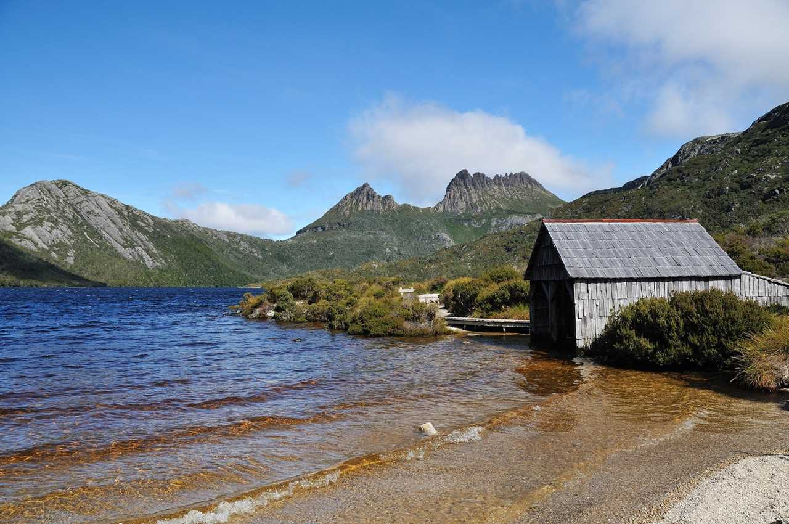
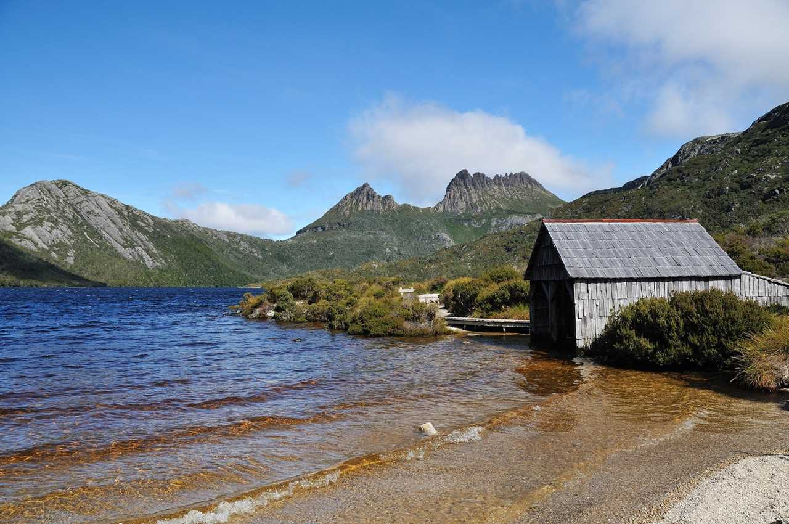

旅行記
-

-

-

-


カナダ ウィスラー(SKI)＆バンクーバー
親子三人でカナダの西部、バンクーバーから車で約2時間の所にあるスキーリゾート、ウィスラーでスキーをしてきました。帰りはバンクーバーに寄り、キャピラノの吊り橋やGranville Island Public Marketなどを楽しみました。
ブログ：Kase's Diary -
 
オーストラリア タスマニア
6歳の息子と親子3人での個人旅行。宿もレンタカーも日本で予約。シドニーで観光した後、ホバートからタスマニアに入り、レンタカーでリッチモンド〜セントクレア湖〜ストラーン～West Coast Wilderness Railway〜Henty Dunes大砂丘～クレイドルマウンテン国立公園〜ワイルドライフパーク〜ワイングラスベイ〜ロス〜ローンセストンを周遊
ブログ：Kase's Diary -

スイス 周遊
交通乗り放題パス、特急指定席、２日目までのホテルだけを日本から予約。チューリヒから氷河急行に乗り、マッターホルンのあるツェルマットへ。ツェルマットではゴルナーグラート登山鉄道やロープウェイを楽しみ、ヴェンゲンへ。ユングフラウヨッホ、グリンデルワルトを周遊し、ラウターブルンネンからミューレンへ。インターラーケンではブリエンツのバレンベルクに寄り、ジュネーブへ。
旅行記サイト：Kase's Home Page -

ニュージーランド 南島周遊
パッケージツアーに頼らず、宿泊場所や現地での交通手段もすべて現地で自ら予約するスタイルに挑戦。クライストチャーチからスタートし、長距離バスを利用しながらマウントクックを経由してクイーンズタウンへ移動。ラフティングや乗馬などのアクティビティを満喫し、ミルフォードサウンドやテ・アナウも観光。ファームステイの可能性を探りながらアロータウンを経て、再びクライストチャーチへ戻り、帰国
旅行記サイト：Kase's Home Page -

カナダ ロッキー山脈
パッケージツアーではない海外旅行に初挑戦。レンタカーと一部ユースホステルは日本で予約。飛行機でカルガリーに入り、レンタカーでバンフ～レイクルイーズ～ジャスパーを周遊。サルファーマウンテン、ぺイトーレイク、アサバスカ氷河、ジャスパー近郊のウィスラーマウンテン、アサバスカ滝、マウントエディスキャベル、ヨーホー国立公園などを訪問
旅行記サイト：Kase's Home Page -
-